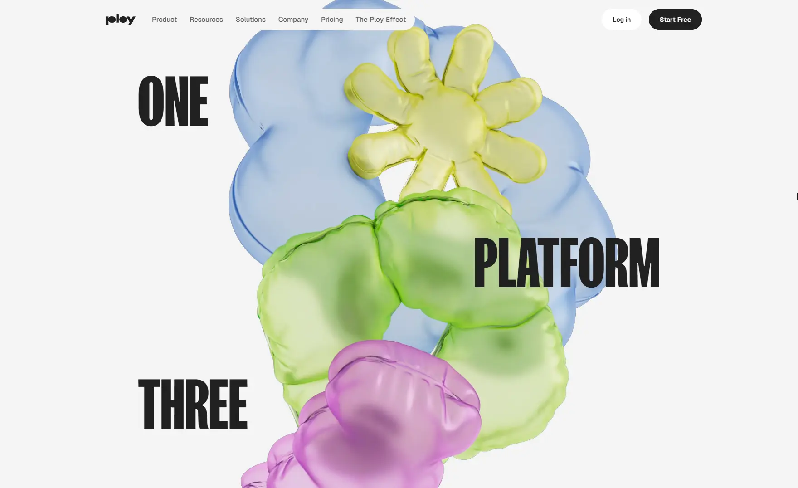

Сайт 026 · Многостраничный · Сервисы и приложения
Ploy
6 место в чемпионате · 79.7 / 100
Screens/026.webp, доминирующий цвет занимает 61% кадра.Что это
Ploy — сайт маркетинговой ИИ-платформы, которая продаётся как «двигатель роста» корпоративного сайта: сборка страниц, аналитика, идентификация посетителей, оптимизация под ответы ИИ-поисковиков и автоматизация SEO-задач. Технически это статический сайт на Astro с островками React, Tailwind с собственной системой токенов, кастомным дисплейным шрифтом и вариативным Geist. Графика построена на глянцевых трёхмерных шариках в пастельной палитре — это предрендеренные изображения с анимацией масштаба и поворота, а не WebGL-сцена; видео первого экрана хостится самостоятельно. Примечательно, что сайт собран и обслуживается на собственном продукте компании.
Описание владельца коллекции: Выразительный яркий сайт маркетинговой ИИ-платформы для продвижения сайтов.
Чем интересен
- Сайт работает на самом себе: в исходнике видны слоты экспериментов с вариантами control, трекер движка с шиной показа эксперимента и конфигурация интеграций с пикселями — то есть платформа служит себе витриной, а подпись в подвале ведёт на студию-подрядчика.
- Анимации сделаны без WebGL: ни three.js, ни единого канваса, ни Lottie с Rive — вместо этого GSAP с разбором текста на символы в кнопках и навигации, декларативные атрибуты появления по скроллу, библиотека из двадцати восьми CSS-анимаций и Framer Motion с явной проверкой «уменьшения движения».
- Обнаружен слой оптимизации под ИИ-ответы, ровно соответствующий продаваемой услуге: файл llms.txt на 32 килобайта, каталог API, описание OpenAPI, запрет обучения в Content-Signal и футерные ссылки «спросить у ИИ» в ChatGPT, Claude, Google AI Mode, Grok и Perplexity с заранее написанным промптом.
- Аналитика собрана плотно и полностью на первом лице: PostHog, Tag Manager, GA4, пиксели Google Ads, Meta, TikTok, LinkedIn, Snapchat и X, плюс собственная атрибуционная cookie на 90 дней по принципу первого касания и собственный менеджер согласия.
- Заметный дефект: адрес документации, на который ведёт пункт в подвале, недоступен по HTTPS — рукопожатие обрывается, при этом HTTP отвечает перенаправлением на тот же неработающий адрес, а DNS и вышестоящий сервер живы.
- Скриншот из коллекции не совпадает с текущим первым экраном: на снимке статичная трёхмерная композиция с крупной надписью, а в живом сайте стоит автовоспроизводящееся видео с другим заголовком; родственная разметка в коде есть, но именно такой композиции нет.
Все 30 номинаций сайта
Итог: 79.7 / 100 по профилю «Сервис, банк, образование». Первых мест в критериях: 9 (единолично 0, разделено 9), призовых мест: 14. Строки отсортированы по месту в номинации, ссылка ведёт к номинации в чемпионате.
- Соответствие бренду и ЦА
- Целостность
- Релевантность и полнота
- Актуальность
- Грамотность
- SEO-оптимизация
- Интеграции
- Адаптивность
- Безопасность
- Попадание в номинацию
- Полнота реализации
- Прозрачность
- Доступность (a11y)
- Социальная ответственность
- Эстетика и оригинальность
- Уникальность предложения
- Удобство интерфейса
- Отзывы и рейтинги
- Современные технологии
- Мультимедийность
- Работа форм и поиска
- Уникальность и экспертность
- Интерактивные элементы
- Интуитивность навигации
- Экспертность
- Соответствие заявленному
- Читабельность
- Инновационность в дизайне
- Креативность в решении задач
- Стабильность
Обоснования по разделам
- Юзабилити и UX
- Липкое меню с группами разделов, живые вкладки и аккордеон работают предсказуемо, но ссылка на документацию в подвале ведёт на неработающий адрес, а почты и телефона на сайте нет вовсе — только форма.
- Дизайн и визуальное восприятие
- Нейтральная светлая основа, на которой вся энергия отдана пастельным трёхмерным шарикам, и намеренно раздавленная типографика: заголовки капсом в 144 пикселя с межстрочным 0,86.
- Контент
- Продукт, три движка, двадцать семь страниц интеграций, сравнения, блог и тарифы с ответами на частые вопросы; цены на странице тарифов есть, а вот демо-доступа без регистрации нет.
- Техническое качество
- Astro с островками React на Cloudflare, собственный CDN, самохостинг видео и мощный машиночитаемый слой: файл для языковых моделей, каталог API, описание OpenAPI и директива о запрете обучения в robots.
- Функциональность и интерактивность
- Форма контактов с полями, двадцать семь заявленных интеграций, аналитика со всех каналов и собственная атрибуция; поиска по сайту нет.
- Доверие и репутация
- Условия и политика с датами, компания из Делавэра, адрес в Сан-Франциско, арбитражная оговорка, страницы доверия и статуса; но юридическое имя в микроразметке расходится с юридическими страницами.
- Инновации и технологичность
- Сайт собран на собственном продукте — в разметке видны его слоты экспериментов и трекер; при этом вся графика сделана предрендеренными картинками и CSS без WebGL и канваса.
- Соответствие категории и целям
- Платформа для роста сайтов объяснена и подкреплена доказательствами, интеграциями и ценами; мешают битая документация и расхождение в юридическом имени.
Что не проверено
- Браузер не запускался: цвета взяты из токенов стилей, а не из вычисленных значений; поведение анимаций и реальные размеры отрисовки не измерялись.
- Реализация трёх маленьких анимаций-ячеек (helix, waverows, rain) не установлена: контейнеры в разметке есть, кода отрисовки нет ни в одном из скачанных чанков.
- Живые эксперименты не наблюдались: массив экспериментов на момент запроса пуст, какие варианты существуют, из статики не видно.
- Отсутствие кастомного курсора и звука установлено только по разметке и стилям, без интерактивного взаимодействия со страницей.
- Совпадение скриншота 026.webp с какой-либо версией сайта не подтверждено: живой первый экран — видео с другим заголовком, а композиция со снимка в коде отсутствует; родственная разметка есть только как заголовок второго уровня для узких экранов.
- Собственные замеры времени ответа не делались: сервер отдаёт свой заголовок времени и состояние кэша, но это данные сервера.
- Содержимое за авторизацией и интерактивные демо внутри приложения не проверялись.
- Точная роль студии tonik.com (полная сборка или только бренд и дизайн) в исходниках не указана.
- Выборочно проверены 34 ссылки из 373 адресов в картах сайта; доступность и содержание остальных, а также аудит доступности и метрики загрузки не проверялись.
- Соответствие скриншота 026.webp текущему состоянию сайта не подтверждено, дата снимка неизвестна.
Паспорт
- Домен
- ploy.ai
- Тип сайта
- Многостраничный
- Категории
- Сервисы и приложения
- Подкатегории
- AI-сервисы
- Для кого
- Маркетологам, Агентствам, Продуктовым командам
- Стиль
- Игривый, Минимализм
- Приёмы
- Видео-фон, Анимация типографики, Бегущая строка, Микроанимации, Скроллителлинг
- Технологии
- Astro, React 18 в островах, Framer Motion (Motion), GSAP, Tailwind CSS, Swiper, FK Screamer и Geist, Cloudflare, Собственный CDN, Собственный продукт на самом сайте, Видео на своём хостинге, Слой для ИИ-агентов, Микроразметка, Чего нет
- Язык
- Английский
- Страна
- США — компания зарегистрирована в Делавэре, адрес офиса в Сан-Франциско указан в политике конфиденциальности; весь контент на английском без языковых альтернатив
- Автор
- не указано: кредита автора, дизайнера или студии в разметке нет; единственная подпись — значок «Made on Ploy by» со ссылкой на студию tonik.com, при этом объём её работы в исходниках не определён
- Год
- 2026
- Добавлен
- 2026-10-05
Палитра
- #F5F5F5 — 61% кадра
- #B2C6DC — 11% кадра
- #D0D99D — 9% кадра
- #B2C97D — 5% кадра
- #D399C7 — 4% кадра
измерено из Screens/026.webp (светло-серая основа 61%, голубой шарик 11%, лаймовые 9% и 5%, розовый 4%); токены сайта заданы ярче: фон #f4f4f4, жёлтый #fffa64, розовый #ffb8fc, голубой #c3dbff, зелёный #d1f48c — пастель на снимке приглушённее, потому что снят другой вариант первого экрана
- Режим
- Светлая
- Цвет фона
- Нейтральный
Чемпионат
6 место из 31 · 79.7 / 100 · первых мест 9 из 30 · сильнее всего: Соответствие бренду и ЦА (1 место)
- Адаптивность — 1 место, 8 баллов
- Соответствие бренду и ЦА — 1 место, 9 баллов
- Целостность — 1 место, 9 баллов
- Релевантность и полнота — 1 место, 9 баллов
- Актуальность — 1 место, 9 баллов
- Грамотность — 1 место, 9 баллов
- Безопасность — 1 место, 8 баллов
- SEO-оптимизация — 1 место, 9 баллов
- Интеграции — 1 место, 9 баллов
Технические факты
- HTTPS
- да
- Meta viewport
- да
- Title
- AI Marketing Platform for Website Growth | Ploy (49 симв.)
- Description
- Ploy is an AI marketing platform for website growth. Build on-brand pages, identify visitors, automate SEO and outreach, and improve conversion. (142 симв.)
- Open Graph
- да
- Структурированные данные
- да
- Sitemap
- индекс /sitemap-index.xml на две карты — 223 и 150 адресов; привычный /sitemap.xml отвечает 404 и в разметке не заявлен
- Robots
- есть: отдельные правила для восьми ботов, директива Content-Signal с запретом обучения ИИ и указание карты сайта
- Аналитика
- PostHog, Google Tag Manager (GTM-PF7R2RX2), Google Analytics 4, Google Ads, Meta Pixel, TikTok Pixel, LinkedIn Insight Tag, Snapchat Pixel, X/Twitter Pixel, собственная атрибуционная cookie на 90 дней, собственный менеджер согласия
- Проверено ссылок
- 34
- Битые ссылки
- docs.ploy.ai — рукопожатие TLS обрывается, HTTP перенаправляет на тот же неработающий HTTPS; при этом ссылка «Docs» стоит в подвале
- Контакты
- формы на странице контактов с полями имени, рабочей почты, должности и компании; почта legal@ploy.ai указана только в политике конфиденциальности, там же почтовый адрес в Сан-Франциско; в подвале также ссылки на страницы доверия и статуса
- Юридическая информация
- условия обслуживания и политика конфиденциальности с датами обновления, компания Ploy, Inc. (Делавэр), право штата Делавэр и обязательный арбитраж по правилам Американской арбитражной ассоциации после тридцати дней переговоров; политика покрывает GDPR и CCPA; в микроразметке юридическое имя указано иначе, чем на юридических страницах
Технологии с доказательствами
- Astro — статическая сборка с хешированными путями и литералом astro в именах файлов, элементы-острова и слоты, встроенный рантайм, инициализирующий загрузку
- React 18 в островах — модуль клиентского рендерера на 182 килобайта с внутренностями React; острова объявляют компонент, рендерер и стратегию загрузки
- Framer Motion (Motion) — в коде острова анимация с возможностью прерывания через kill и явная проверка «уменьшения движения» через matchMedia
- GSAP — свыше сотни декларативных хуков в разметке, включая пять кнопок с побайтовым разбором подписи на символы
- Tailwind CSS — утилитарная разметка, собственное пространство токенов и переменные шрифтов, сотни классов скруглений и трекинга
- Swiper — встроенный блок стилей карусели с переменными навигации и элементами кнопок, плюс разметка с хуками переключения
- FK Screamer и Geist — правила @font-face на кастомный дисплейный шрифт с CDN и вариативный Geist с локальными подмножествами latin и latin-ext, оба предзагружены
- Cloudflare — заголовки сервера, состояние кэша и служебная cookie управления ботами
- Собственный CDN — все медиа и кастомный шрифт отдаются с отдельного поддомена, в пути зашит идентификатор арендатора и пользовательское пространство загрузок
- Собственный продукт на самом сайте — в разметке видны слоты экспериментов с вариантами control, трекер движка с шиной событий показа эксперимента и конфигурация интеграций с пикселями Meta и Google Ads
- Видео на своём хостинге — тег video с автозапуском, отключённым звуком и зацикливанием, источники mp4 и webm плюс постер, все файлы отдаются с основного домена
- Слой для ИИ-агентов — файл llms.txt на 32 килобайта, каталог API, описание OpenAPI, ссылки service-desc и api-catalog в разметке, директива Content-Signal в robots и диплинки «Ask AI» в пять сервисов
- Микроразметка — четыре блока JSON-LD на главной, отдельные типы на страницах тарифов, возможностей, контактов, блога и эффекта платформы
- Чего нет — three.js и WebGL, Lottie, Rive, Spline, Matter.js — ноль совпадений в разметке и тринадцати скачанных чанках; ни одного канваса, ни звуковой библиотеки
Что смотреть в первую очередь
Смотреть ради двух слоёв: первый — машиночитаемый, с файлом llms.txt, каталогом API, описанием OpenAPI и директивой Content-Signal, ровно под продаваемую услугу; второй — визуальный, где пастельные трёхмерные шарики и «раздавленная» типографика сделаны предрендеренными картинками и CSS, без WebGL.
Похожие в коллекции
- WeekSync — общее: Сервисы и приложения, Минимализм, Игривый, Скроллителлинг, Анимация типографики, Микроанимации
- Dia — общее: Сервисы и приложения, Минимализм, Скроллителлинг, Микроанимации, Видео-фон
- Flect — общее: Минимализм, Игривый, Скроллителлинг, Анимация типографики, Микроанимации
- ScreenTune — общее: Сервисы и приложения, Минимализм, Скроллителлинг, Микроанимации, Видео-фон